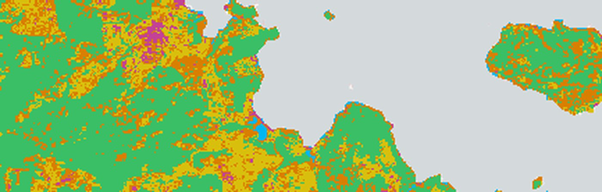
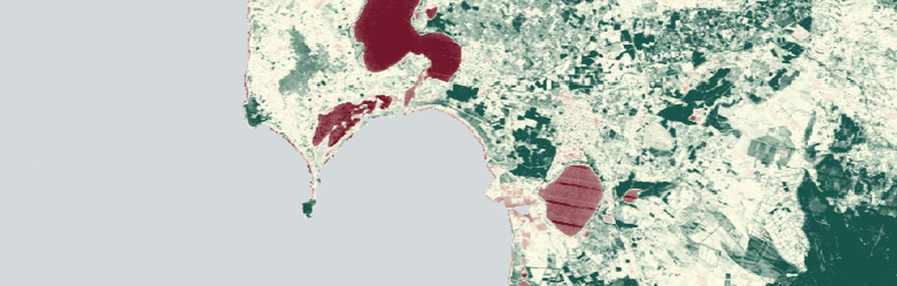

Sardinian farmland · interactive visuals
Land use classification and NDVI change analysis across Sardinia using Landsat 7 (2007) and Landsat 8 (2014, 2020, 2024). Random Trees classifier; per-year overall accuracy 73.5%–80.1% on 262 stratified validation points.
Interactive maps

Land use classification
Wall-to-wall classified raster of Sardinia, with a year toggle for 2007, 2014, 2020, 2024. Click a class in the legend to isolate it; overlay the 250 training polygons on top.

NDVI temporal change
Year toggle drives a live NDVI raster map alongside the distribution histogram, percentile bands, and class-area trajectory across 2007 → 2024.
Land use transitions
5 × 5 transition matrix from 2007 to 2024 as an interactive Sankey. Hover a flow to highlight a single class-to-class transition with km².
Data & provenance
Source ·
Vector data exported from SardinianTRAININGpolygonsUSE.shp
(250 polygons, WGS 84) and the RemoteSensingFinalProject.gdb
file geodatabase. Transition matrix decoded from Tabulat_2007_2024
+ the From_To_Matrix sheet of the project workbook. Per-zone NDVI summary statistics computed from
Zonal_NDVI_{2007,2014,2020,2024}
(~218k zones each).
Pipeline · Imagery cloud-masked and reduced to NDVI / SAVI in Google Earth Engine, classified in ArcGIS Pro using Random Trees (5 classes), zonal stats and tabulate area produced in ArcGIS, then exported here as GeoJSON + JSON for the browser.
Re-running rasters ·
The original .tif rasters live on Google Drive. To regenerate, see
GEE_export_notebook.ipynb
in this folder for steps to (E) build a COG NDVI swipe layer and (F) publish a Google Earth Engine App.